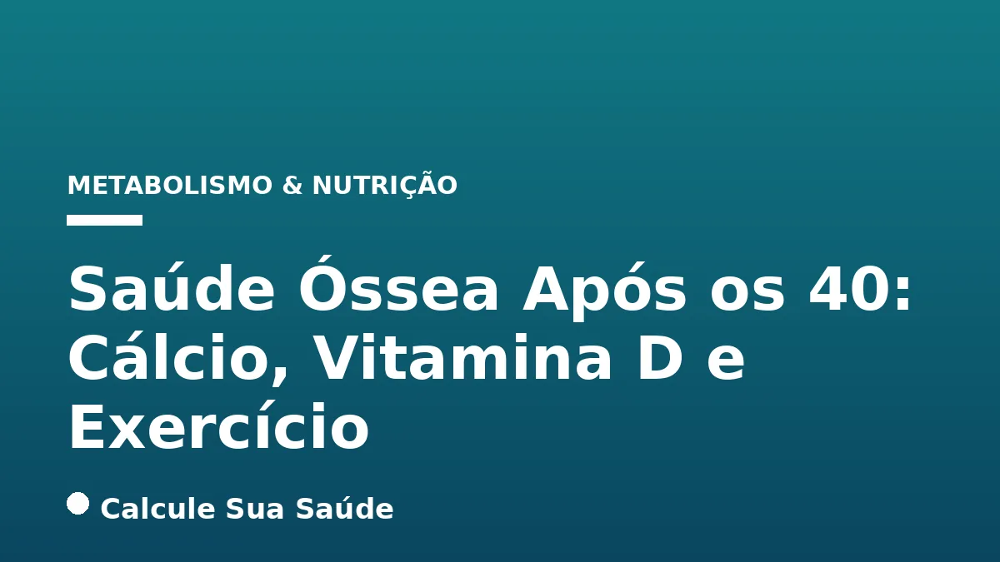

Aviso médico importante
Este conteúdo é educativo e informativo e não substitui a consulta, o diagnóstico ou o tratamento de um profissional de saúde. Em caso de sintomas, procure orientação médica.
Índice do Artigo
- 1. O Que é Saúde Óssea e Por Que Ela Muda Após os 40?
- 2. Osteoporose e Osteopenia: Entendendo as Condições
- 3. Causas e Fatores de Risco para a Perda Óssea
- 4. Sintomas e Diagnóstico da Osteoporose
- 5. O Papel Crucial do Cálcio na Saúde Óssea
- 6. Vitamina D: A Chave para a Absorção de Cálcio
- 7. Exercício de Força: O Estímulo Mecânico Essencial
- 8. Estratégias de Prevenção Abrangentes Além do Tripé Essencial
- 9. Opções de Tratamento Medicamentoso para Osteoporose
- 10. Mitos Comuns sobre a Saúde Óssea Desmistificados pela Ciência
- 11. A Realidade da Osteoporose no Brasil: Dados Epidemiológicos
- 12. Recomendações Práticas para Manter Seus Ossos Fortes Após os 40
- 13. Conclusão: Um Compromisso Contínuo com a Saúde Óssea
- 14. Perguntas frequentes
Com o avanço da idade, a saúde óssea torna-se uma preocupação central para a manutenção da qualidade de vida e independência. A partir dos 40 anos, o corpo humano inicia um processo gradual de perda de densidade óssea, que se acentua significativamente em fases como a menopausa nas mulheres e, mais tardiamente, nos homens. Compreender esse processo e adotar estratégias preventivas é fundamental para evitar condições como a osteoporose, uma doença silenciosa que fragiliza os ossos e aumenta o risco de fraturas.
Neste artigo aprofundado, exploraremos os pilares da saúde óssea após os 40 anos, com foco científico no papel indispensável do cálcio, da vitamina D e do exercício físico de força. Baseado em evidências, desmistificaremos conceitos comuns e forneceremos informações precisas para que você possa tomar decisões informadas sobre sua saúde óssea, garantindo um envelhecimento ativo e com menos riscos.
A prevenção da osteoporose não é apenas uma questão de suplementação, mas sim de um estilo de vida integrado que envolve nutrição adequada, exposição solar consciente e, crucialmente, a prática regular de atividades físicas que estimulem a formação óssea. Juntos, esses elementos formam um escudo protetor contra a fragilidade óssea, permitindo que você desfrute de uma vida plena e saudável por muitos anos.
Em resumo
- A massa óssea atinge o pico entre 25 e 30 anos, e a perda gradual começa após os 35-40, acelerando na menopausa e após os 70 anos em homens.
- Osteoporose é uma doença silenciosa que diminui a densidade óssea, tornando os ossos frágeis e propensos a fraturas, sendo a densitometria óssea o padrão-ouro para diagnóstico.
- Cálcio (1.000-1.200 mg/dia) e Vitamina D (800-1.000 UI/dia, ou 1.000-2.000 UI/dia para manter níveis acima de 30 ng/mL) são essenciais para a formação e absorção óssea, respectivamente.
- Exercícios de força (musculação, calistenia) estimulam a remodelação óssea, fortalecem músculos e reduzem o risco de quedas, sendo recomendados 2 a 3 vezes por semana.
- Mitos como a crença de que apenas suplementos previnem fraturas ou que não se pode exercitar com osteoporose são desmentidos pela ciência, que enfatiza a importância da carga mecânica nos ossos.
- A osteoporose afeta cerca de 10 milhões de brasileiros, com alta mortalidade após fraturas de quadril, e grande parte dos casos permanece subdiagnosticada.
1. O Que é Saúde Óssea e Por Que Ela Muda Após os 40?
A saúde óssea é um processo biológico dinâmico e contínuo, caracterizado pela constante remodelação do tecido ósseo. Este processo envolve a reabsorção de osso antigo por células chamadas osteoclastos e a formação de novo tecido ósseo por osteoblastos. Estima-se que o esqueleto humano passe por um ciclo completo de remodelação a cada 10 anos, garantindo a integridade estrutural e a capacidade de reparo dos ossos.
Atingimos o pico de massa óssea entre os 25 e 30 anos de idade, um período em que a formação óssea supera a reabsorção. No entanto, a partir dos 35 a 40 anos, essa balança começa a se inclinar: o corpo inicia uma perda gradual de densidade óssea. Este declínio se acelera de forma marcante nas mulheres após a menopausa, devido à drástica redução dos níveis de estrogênio, um hormônio vital para a manutenção da saúde óssea. Nos homens, embora a perda seja mais lenta, ela tende a se tornar significativa após os 70 anos.
A Importância da Prevenção Precoce
Entender essa cronologia é crucial para a prevenção. As ações tomadas na juventude para construir uma massa óssea robusta são tão importantes quanto as estratégias adotadas na meia-idade para minimizar a perda. A saúde óssea não é um destino, mas uma jornada contínua que exige atenção e cuidado em todas as fases da vida, especialmente quando o metabolismo ósseo começa a desacelerar.
2. Osteoporose e Osteopenia: Entendendo as Condições
A osteoporose é uma doença osteometabólica sistêmica caracterizada pela diminuição da densidade mineral óssea (DMO) e pela deterioração da microarquitetura do tecido ósseo. Essa deterioração leva a uma fragilidade óssea acentuada, tornando os ossos suscetíveis a fraturas mesmo com traumas mínimos ou, em alguns casos, espontaneamente. É frequentemente referida como uma "doença silenciosa" porque a perda óssea ocorre sem sintomas evidentes, e o diagnóstico muitas vezes só é feito após a ocorrência da primeira fratura.
A **osteopenia**, por sua vez, representa um estágio anterior à osteoporose. Caracteriza-se por uma baixa massa óssea, mas não tão severa quanto a osteoporose. Embora a osteopenia não seja tão grave quanto a osteoporose, ela serve como um importante sinal de alerta. Indivíduos diagnosticados com osteopenia devem ser acompanhados clinicamente para avaliar fatores de risco e monitorar a evolução da densidade óssea, implementando medidas preventivas para evitar a progressão para a osteoporose.
Consequências das Fraturas por Fragilidade
As fraturas por fragilidade, especialmente nas vértebras, quadril e punho, são as consequências mais graves da osteoporose. Uma fratura de quadril, por exemplo, está associada a alta morbidade e mortalidade, impactando severamente a qualidade de vida e a independência do indivíduo. A prevenção dessas fraturas é o objetivo primordial do manejo da saúde óssea.
3. Causas e Fatores de Risco para a Perda Óssea
A perda de densidade óssea e o desenvolvimento da osteoporose resultam de um desequilíbrio entre a formação e a reabsorção óssea. As causas podem ser classificadas como primárias, que são as mais comuns e não estão associadas a outras doenças (como a osteoporose pós-menopausa e a osteoporose senil), ou secundárias, que são decorrentes de outras condições médicas ou uso de certos medicamentos.
Fatores de Risco Primários e Secundários
- Alterações Hormonais: A deficiência de estrogênio em mulheres após a menopausa é um dos principais gatilhos, pois esse hormônio desempenha um papel crucial no equilíbrio da saúde óssea. Em homens, a deficiência de testosterona também contribui para a perda óssea.
- Deficiência Nutricional: A ingestão inadequada de cálcio e vitamina D ao longo da vida compromete a formação e manutenção óssea.
- Envelhecimento: Com o passar dos anos, a capacidade do organismo de metabolizar e absorver cálcio diminui progressivamente.
- Medicamentos: O uso prolongado de glicocorticosteroides (cortisona), anticonvulsivantes, hormônio tireoidiano em excesso e heparina pode aumentar o risco.
- Doenças Preexistentes: Condições como artrite reumatoide, doenças inflamatórias intestinais, doença celíaca, diabetes, anorexia nervosa, hipertireoidismo, hiperparatireoidismo, e doenças hepáticas e renais crônicas podem impactar negativamente a saúde óssea.
Fatores de Estilo de Vida e Genéticos
Além das causas diretas, diversos fatores de risco podem acelerar a perda óssea:
- Genéticos: História familiar de osteoporose ou fraturas aumenta a predisposição.
- Sexo e Etnia: Mulheres são mais propensas, especialmente após a menopausa, e mulheres brancas e asiáticas apresentam maior risco.
- Idade: O risco cresce exponencialmente com o envelhecimento.
- Estilo de Vida: Sedentarismo, tabagismo, consumo excessivo de álcool e cafeína, e uma dieta desequilibrada (rica em fibras, proteínas e sódio, que podem diminuir a absorção de cálcio) são fatores contribuintes.
- Características Físicas: Indivíduos com baixo peso corporal, tipo constitucional pequeno e magreza excessiva têm maior risco.
- Outros: Menopausa precoce e amenorreia por exercícios também são fatores de risco.
4. Sintomas e Diagnóstico da Osteoporose
A osteoporose é, em sua fase inicial, uma doença traiçoeira por ser assintomática. A perda óssea ocorre silenciosamente, sem que o indivíduo perceba qualquer alteração, até que um evento significativo, como uma fratura, ocorra. Essa característica a torna uma condição de saúde pública de grande impacto, pois o diagnóstico tardio pode resultar em complicações graves e irreversíveis.
Sinais de Alerta e Sintomas Típicos
Quando os sintomas se manifestam, geralmente indicam um estágio mais avançado da doença ou a ocorrência de fraturas. Estes podem incluir:
- Perda de Altura: Uma diminuição progressiva da altura ao longo do tempo, muitas vezes resultado de microfraturas ou colapsos vertebrais.
- Postura Encurvada (Cifose): O desenvolvimento de uma curvatura anormal na coluna vertebral, conhecida como “corcunda de viúva”, também causada por fraturas vertebrais.
- Fraturas por Fragilidade: Fraturas que ocorrem com traumas mínimos (como uma queda da própria altura) ou, em casos mais graves, espontaneamente. As regiões mais comuns são vértebras, quadril e punho.
- Dor Dorsolombar: Dor nas costas, que pode ser crônica ou aguda, causada por espasmos musculares ou microfraturas vertebrais. É importante notar que dor lombar pode ter muitas causas, e nem toda dor nas costas indica osteoporose.
O Padrão-Ouro para o Diagnóstico: Densitometria Óssea
O diagnóstico da osteoporose começa com uma avaliação clínica detalhada, que inclui a análise de fatores de risco, histórico de fraturas e histórico familiar. No entanto, o exame padrão-ouro para diagnosticar a osteoporose e avaliar o risco de fraturas é a **Densitometria Óssea (DMO)**, também conhecida como DEXA scan.
A DMO mede a densidade mineral óssea em regiões específicas do corpo, como a coluna lombar, o fêmur total, o colo do fêmur ou o terço médio do rádio. Os resultados são comparados com os de adultos jovens saudáveis (T-score) e com os de pessoas da mesma idade e sexo (Z-score) para determinar a presença de osteopenia ou osteoporose.
Recomendações de Rastreamento
O rastreamento com DMO é recomendado para:
- Todas as mulheres com 65 anos ou mais.
- Homens com 70 anos ou mais.
- Mulheres pós-menopausa e homens entre 50 e 69 anos com fatores de risco.
- Mulheres mais jovens com fatores de risco significativos.
Além da DMO, radiografias podem ser solicitadas para identificar fraturas já existentes, mesmo que assintomáticas. Exames laboratoriais, como dosagens de cálcio, vitamina D, PTH (paratormônio), CTX e P1NP, podem ser úteis para avaliar o metabolismo ósseo e excluir causas secundárias da perda óssea.
5. O Papel Crucial do Cálcio na Saúde Óssea
O cálcio é o mineral mais abundante no corpo humano e um componente essencial para a formação e manutenção do esqueleto. Cerca de 99% do cálcio corporal está armazenado nos ossos e dentes, conferindo-lhes rigidez e estrutura. Quando a ingestão de cálcio é insuficiente, o organismo recorre às reservas ósseas para manter os níveis sanguíneos de cálcio estáveis, um processo vital para funções como a contração muscular, a transmissão nervosa e a coagulação sanguínea. Essa retirada constante de cálcio dos ossos leva à diminuição da densidade óssea e, consequentemente, à fragilidade.
Recomendações de Ingestão Diária de Cálcio
As necessidades diárias de cálcio variam conforme a idade e o sexo. Para adultos de 19 a 50 anos e homens de 51 a 70 anos, a recomendação é de 1.000 mg de cálcio por dia. Mulheres acima de 50 anos e homens acima de 70 anos devem aumentar essa ingestão para 1.200 mg por dia, devido à maior vulnerabilidade à perda óssea.
Fontes Alimentares de Cálcio
A melhor forma de obter cálcio é através da dieta. As principais fontes incluem:
- Laticínios: Leite, iogurte e queijos são excelentes fontes e de alta biodisponibilidade. Recomenda-se pelo menos três porções de leite e derivados ao dia.
- Vegetais de Folhas Verdes Escuras: Couve, couve-galega, brócolis e espinafre contêm cálcio, embora a absorção possa ser ligeiramente menor devido à presença de oxalatos.
- Peixes: Sardinha (com espinhas) e salmão são boas fontes.
- Alimentos Fortificados: Alguns sucos, cereais e bebidas vegetais são enriquecidos com cálcio.
Para mais detalhes sobre as necessidades, fontes e absorção deste mineral vital, consulte nosso artigo sobre Cálcio: Necessidades, Fontes e Absorção Essencial.
6. Vitamina D: A Chave para a Absorção de Cálcio
A vitamina D, muitas vezes chamada de "vitamina do sol", desempenha um papel indispensável na saúde óssea. Sua principal função é regular o metabolismo do cálcio e do fósforo, sendo fundamental para a absorção intestinal do cálcio e sua posterior fixação nos ossos. Sem níveis adequados de vitamina D, mesmo uma ingestão suficiente de cálcio pode não ser eficaz, pois o mineral não será absorvido e utilizado corretamente pelo organismo.
Recomendações de Ingestão e Níveis Sanguíneos
Para adultos com 50 anos ou mais, a ingestão diária recomendada de vitamina D é de 800-1.000 UI (Unidades Internacionais). A Sociedade Brasileira de Endocrinologia e Metabologia (SBEM) sugere que os níveis séricos de 25-OHD (a forma ativa da vitamina D) sejam mantidos acima de 30 ng/mL em idosos e em indivíduos com risco de fratura. Esse nível pode ser alcançado com uma suplementação diária de 1.000 a 2.000 UI ou uma dose equivalente semanal, sempre sob orientação médica.
Fontes de Vitamina D
A forma mais eficiente de o corpo produzir vitamina D naturalmente é através da exposição solar. Uma exposição moderada de 15 a 30 minutos por dia, com braços e pernas expostos, fora dos horários de pico de radiação ultravioleta, é geralmente suficiente para a maioria das pessoas. No entanto, fatores como latitude, estação do ano, tipo de pele, uso de protetor solar e estilo de vida podem influenciar essa produção.
Além da exposição solar, algumas fontes alimentares contribuem para a ingestão de vitamina D, embora em menor quantidade:
- Peixes Gordurosos: Salmão, atum, cavala e sardinha são as melhores fontes alimentares.
- Gema de Ovo: Contém pequenas quantidades de vitamina D.
- Alimentos Fortificados: Leite, cereais e alguns iogurtes podem ser enriquecidos com vitamina D.
Em casos de deficiência diagnosticada, a suplementação de vitamina D é frequentemente necessária e deve ser feita com acompanhamento médico para determinar a dose e a duração adequadas.
7. Exercício de Força: O Estímulo Mecânico Essencial
Enquanto o cálcio e a vitamina D fornecem os blocos de construção e a regulação para a saúde óssea, o exercício físico de força é o estímulo mecânico que induz a remodelação óssea e o fortalecimento. Os ossos são tecidos vivos que respondem às cargas e tensões aplicadas sobre eles. A prática de exercícios de força gera um estresse mecânico que sinaliza ao corpo a necessidade de produzir novas células ósseas, mantendo o tecido ativo, denso e resistente.
Benefícios do Exercício de Força para os Ossos
- Estímulo à Remodelação Óssea: A carga mecânica sobre os ossos ativa os osteoblastos, células responsáveis pela formação de novo tecido ósseo, contribuindo para o aumento da densidade mineral óssea.
- Fortalecimento Muscular: Músculos mais fortes proporcionam maior suporte às articulações e ao esqueleto, melhorando a postura e a estabilidade geral do corpo.
- Melhora do Equilíbrio e Coordenação: A prática regular de exercícios de força aprimora o equilíbrio, reduzindo significativamente o risco de quedas, que são a principal causa de fraturas em idosos.
- Redução do Risco de Fraturas: Ao aumentar a densidade óssea e a força muscular, o exercício de força atua diretamente na prevenção de fraturas por fragilidade.
Tipos de Exercícios Recomendados
Para obter os benefícios máximos para a saúde óssea, os exercícios devem envolver carga e impacto. Recomenda-se praticar de 2 a 3 vezes por semana, sempre com orientação profissional para garantir a execução correta e segura:
- Musculação: Exercícios como agachamento, leg press, supino e remada são altamente eficazes.
- Calistenia e Exercícios com Peso Corporal: Flexões, pranchas, agachamentos sem peso e levantamento de panturrilha.
- Atividades com Impacto Moderado: Caminhada acelerada, corrida (em superfícies firmes, se não houver contraindicação), dança, pular corda e subir escadas.
Evidências Científicas
Estudos clínicos reforçam a indicação da musculação como estratégia preventiva e terapêutica. Pesquisas demonstraram que exercícios de resistência combinados com atividade aeróbica com carga melhoram a densidade mineral óssea em mulheres pós-menopausa, mesmo naquelas sem histórico de fraturas. A atividade física regular é um pilar insubstituível na manutenção da saúde óssea ao longo da vida.
8. Estratégias de Prevenção Abrangentes Além do Tripé Essencial
Embora o cálcio, a vitamina D e o exercício de força sejam os pilares fundamentais da saúde óssea, a prevenção da osteoporose e de suas complicações exige uma abordagem mais ampla, que englobe diversos aspectos do estilo de vida e do ambiente. A adoção de hábitos saudáveis deve ser um compromisso contínuo, desde a juventude até a terceira idade.
Hábitos de Vida Saudáveis
- Evitar Tabagismo: O tabaco é um fator de risco conhecido para a perda óssea. Fumar pode diminuir a densidade óssea e aumentar o risco de fraturas.
- Moderar o Consumo de Álcool: O consumo excessivo de álcool pode interferir na absorção de cálcio e vitamina D, além de afetar a função dos osteoblastos.
- Manter um Peso Corporal Adequado: Tanto o baixo peso quanto a obesidade podem ser prejudiciais à saúde óssea. O baixo peso está associado a menor massa óssea, enquanto a obesidade, embora possa ter um efeito protetor inicial, está ligada a outros problemas de saúde que indiretamente afetam os ossos e aumentam o risco de quedas.
- Dieta Equilibrada: Além do cálcio e da vitamina D, uma dieta rica em frutas, vegetais e proteínas magras fornece outros nutrientes importantes para a saúde óssea, como magnésio, potássio e vitamina K. Evitar o consumo excessivo de alimentos ultraprocessados também é benéfico para a saúde geral.
Prevenção de Quedas
A prevenção de quedas é uma estratégia crucial, especialmente em idosos, pois a maioria das fraturas osteoporóticas ocorre como resultado de uma queda. Medidas importantes incluem:
- Segurança Ambiental: Remover tapetes soltos, melhorar a iluminação, instalar barras de apoio no banheiro e corrimãos em escadas.
- Revisão de Medicamentos: Alguns medicamentos podem causar tontura ou sonolência, aumentando o risco de quedas. A revisão regular da medicação com um médico é essencial.
- Exames de Visão e Audição: Manter a visão e a audição em dia ajuda a prevenir tropeços e desequilíbrios.
- Uso de Calçados Adequados: Sapatos com solado antiderrapante e que ofereçam bom suporte são importantes.
9. Opções de Tratamento Medicamentoso para Osteoporose
Para indivíduos diagnosticados com osteoporose ou com alto risco de fraturas, o tratamento medicamentoso é uma parte essencial do plano de manejo. O objetivo é interromper a perda óssea, e em alguns casos, até mesmo aumentar a densidade óssea, reduzindo significativamente o risco de novas fraturas. A escolha do medicamento é individualizada e deve ser feita por um médico especialista, considerando o perfil do paciente, a gravidade da doença e a presença de outras condições de saúde.
Principais Classes de Medicamentos
- Bisfosfonatos: São a classe de medicamentos mais comumente utilizada para prevenir e tratar a osteoporose, especialmente em mulheres na pós-menopausa. Eles atuam retardando a reabsorção óssea pelos osteoclastos, permitindo que os osteoblastos continuem a formar osso novo, resultando em um aumento da densidade óssea. Exemplos incluem Alendronato e Ácido Zoledrônico, que demonstraram reduzir o risco de fraturas vertebrais e de quadril.
- Raloxifeno: Este é um modulador seletivo do receptor de estrogênio (SERM) aprovado para o tratamento da osteoporose em mulheres na pós-menopausa. O Raloxifeno tem evidência para a prevenção de fraturas vertebrais, mas não para as de quadril.
- Outros Medicamentos: Existem outras classes de medicamentos aprovados para o tratamento da osteoporose, como o Denosumabe (um anticorpo monoclonal que inibe a reabsorção óssea) e os agentes anabólicos (que estimulam a formação óssea, como a Teriparatida). A escolha depende da avaliação médica e das necessidades específicas do paciente.
Considerações Importantes
É fundamental que o tratamento medicamentoso seja acompanhado de perto por um profissional de saúde. Além disso, a escolha do agente anti-diabético, por exemplo, deve considerar o impacto na saúde óssea, pois alguns podem aumentar o risco de fraturas (Classe I, Nível B). O tratamento da osteoporose é um compromisso de longo prazo, e a adesão do paciente é crucial para o sucesso terapêutico.
10. Mitos Comuns sobre a Saúde Óssea Desmistificados pela Ciência
A saúde óssea é um tema cercado por muitos mitos e informações equivocadas. É essencial basear as decisões de saúde em evidências científicas sólidas. Vamos desmistificar algumas das crenças mais comuns:
Mito 1: A osteoporose acontece apenas por falta de cálcio no organismo.
Ciência: Embora a ingestão inadequada de cálcio seja um fator de risco importante, a osteoporose é uma condição multifatorial. A deficiência de vitamina D, por exemplo, dificulta drasticamente a absorção e o metabolismo do cálcio, tornando sua ingestão ineficaz. Além disso, a saúde óssea é influenciada por fatores hormonais, genéticos, estilo de vida, saúde intestinal e uso de medicamentos. O principal é um desequilíbrio no metabolismo do cálcio e sua fixação, não apenas a ausência do mineral.
Mito 2: Não posso fazer exercício físico, ou só posso fazer exercício leve, se tiver osteoporose.
Ciência: Este é um mito perigoso. A maioria das evidências científicas demonstra que a atividade física, especialmente exercícios de força e com impacto moderado, é benéfica para quem tem osteoporose. O exercício aumenta o metabolismo ósseo, melhora a fixação de cálcio, fortalece a musculatura, aprimora a mobilidade, função e equilíbrio, e reduz significativamente o risco de quedas. A musculação, quando supervisionada por um profissional, é segura e comprovadamente fortaleceu os ossos de mulheres na pós-menopausa em diversos estudos.
Mito 3: Suplementos de cálcio e vitamina D sozinhos previnem fraturas.
Ciência: Estudos abrangentes, envolvendo mais de 150 mil idosos, indicam que a suplementação de cálcio e vitamina D por conta própria não previne fraturas, a menos que haja uma deficiência comprovada e uma indicação médica específica. A suplementação só faz diferença para quem tem deficiência diagnosticada. O osso não responde apenas à disponibilidade de cálcio, mas também à carga mecânica (exercício de força) e a um ambiente hormonal e metabólico saudável. Uma abordagem integrada é sempre mais eficaz.
11. A Realidade da Osteoporose no Brasil: Dados Epidemiológicos
A osteoporose representa um sério desafio de saúde pública no Brasil, com um impacto significativo na morbidade, mortalidade e nos custos do sistema de saúde. Compreender a epidemiologia da doença no país é fundamental para direcionar políticas de prevenção e tratamento.
Prevalência e Impacto das Fraturas
- A osteoporose afeta cerca de 10 milhões de brasileiros, um número expressivo que ressalta a dimensão do problema.
- Estima-se que aproximadamente 50% das mulheres e 20% dos homens com idade igual ou superior a 50 anos sofrerão uma fratura osteoporótica ao longo da vida. Acima dos 70 anos, essa taxa de 50% atinge ambos os sexos, evidenciando a universalidade do risco com o envelhecimento.
- No Brasil, ocorrem cerca de 127.000 fraturas de fêmur por ano, com uma projeção alarmante de aumento para 160.000 em 2050, o que demandará uma infraestrutura de saúde robusta e estratégias preventivas eficazes.
Mortalidade Associada às Fraturas
A mortalidade após uma fratura de quadril é particularmente alta, sendo um dos aspectos mais preocupantes da osteoporose:
- Cerca de 5% dos pacientes falecem durante a internação hospitalar.
- 12% nos três meses subsequentes à fratura.
- 20% no ano seguinte à fratura (dados norte-americanos).
- Uma pesquisa realizada no Rio de Janeiro revelou uma mortalidade de 23,6% nos três meses subsequentes a uma fratura de fêmur, corroborando a gravidade da condição.
- A Abrasso (Associação Brasileira de Avaliação Óssea e Osteometabolismo) estima que até 24% dos pacientes falecem no ano seguinte a uma fratura no quadril.
Subdiagnóstico e Prevalência Regional
Apesar da alta prevalência, o subdiagnóstico é uma realidade preocupante. Acredita-se que, dos cerca de 10 a 15 milhões de brasileiros que convivem com a doença, apenas 20% foram diagnosticados. Isso significa que a grande maioria das pessoas com osteoporose desconhece sua condição, perdendo a oportunidade de intervenção precoce.
Estudos regionais também fornecem dados importantes:
- Um estudo em Recife com 627 mulheres com 50 anos ou mais mostrou uma prevalência de osteoporose de 28,8% na coluna lombar e 18,8% no colo do fêmur. A prevalência de fraturas vertebrais, sintomáticas ou não, foi de 20% entre mulheres de 50 a 59 anos, elevando-se para 81,8% entre 80 e 89 anos.
- Em um estudo epidemiológico no Instituto Nacional de Traumatologia e Ortopedia (INTO) com 712 homens acima de 50 anos, a prevalência global de osteoporose foi de 19,5%.
Esses dados reforçam a necessidade de campanhas de conscientização, rastreamento e acesso a diagnóstico e tratamento adequados em todo o território nacional.
12. Recomendações Práticas para Manter Seus Ossos Fortes Após os 40
Manter a saúde óssea após os 40 anos é um investimento na sua qualidade de vida futura. A implementação de um plano de ação abrangente, baseado em evidências científicas, é a chave para prevenir a osteoporose e suas consequências. Aqui estão as recomendações práticas:
1. Otimize a Ingestão de Cálcio
- Fontes Alimentares: Priorize leite e derivados (iogurte, queijos), vegetais de folhas verdes escuras (couve, brócolis) e peixes como sardinha. Tente consumir pelo menos três porções de laticínios por dia.
- Quantidades: Busque 1.000 mg/dia se você tem entre 19 e 50 anos (homens até 70 anos) e 1.200 mg/dia para mulheres acima de 50 e homens acima de 70.
2. Garanta Níveis Adequados de Vitamina D
- Exposição Solar: Aproveite 15 a 30 minutos de sol diariamente, fora dos horários de pico, expondo braços e pernas.
- Fontes Alimentares: Inclua peixes gordurosos (salmão, atum), gema de ovo e alimentos fortificados em sua dieta.
- Suplementação: Se houver deficiência diagnosticada, siga a orientação médica para a suplementação (800-1.000 UI/dia para maiores de 50, ou 1.000-2.000 UI/dia para manter níveis acima de 30 ng/mL).
3. Pratique Exercícios de Força Regularmente
- Frequência: Realize exercícios de força 2 a 3 vezes por semana.
- Tipos: Inclua musculação, calistenia, exercícios com peso corporal, caminhada acelerada, corrida (se apropriado), dança e subir escadas.
- Orientação Profissional: Sempre procure um educador físico ou fisioterapeuta para um plano seguro e eficaz.
4. Adote um Estilo de Vida Saudável
- Evite Tabagismo e Álcool Excessivo: Esses hábitos são prejudiciais à densidade óssea.
- Mantenha Peso Saudável: Evite o baixo peso e a obesidade.
- Dieta Equilibrada: Consuma uma variedade de nutrientes essenciais para a saúde geral e óssea.
5. Prevenção de Quedas
- Ambiente Seguro: Elimine obstáculos em casa, melhore a iluminação.
- Revisão Médica: Verifique medicamentos que possam causar tontura e faça exames de visão e audição regularmente.
6. Monitoramento Médico
- Densitometria Óssea: Realize o exame conforme a recomendação médica, especialmente se você tem fatores de risco ou idade acima de 65 (mulheres) ou 70 (homens).
- Consultas Regulares: Discuta sua saúde óssea com seu médico, especialmente se houver histórico familiar ou outros fatores de risco.
Lembre-se: este conteúdo é educativo e não substitui a avaliação e o acompanhamento de um profissional de saúde qualificado.
13. Conclusão: Um Compromisso Contínuo com a Saúde Óssea
A saúde óssea após os 40 anos não é um tema a ser negligenciado. É um compromisso contínuo que exige atenção, conhecimento e ação. A perda gradual de densidade óssea que se inicia nessa fase da vida, culminando em condições como a osteoporose, pode ter um impacto devastador na qualidade de vida, independência e longevidade. No entanto, como demonstramos, a ciência oferece um caminho claro para a prevenção e o manejo eficaz.
O tripé formado pelo cálcio, vitamina D e exercício de força emerge como a estratégia mais robusta e baseada em evidências para manter seus ossos fortes e resistentes. O cálcio fornece a matéria-prima, a vitamina D garante sua absorção e utilização, e o exercício de força atua como o estímulo mecânico essencial para a remodelação e o fortalecimento ósseo. Além desses pilares, um estilo de vida saudável, que inclui a cessação do tabagismo, a moderação do consumo de álcool e a prevenção de quedas, complementa essa abordagem preventiva.
É fundamental desmistificar crenças populares e abraçar a ciência. A osteoporose não é uma sentença inevitável do envelhecimento, e a atividade física é uma aliada poderosa, mesmo para quem já tem a doença. O diagnóstico precoce, através da densitometria óssea, e o acompanhamento médico regular são cruciais para intervenções oportunas, seja através de mudanças no estilo de vida ou de tratamentos medicamentosos específicos.
Ao adotar essas práticas, você não apenas protege seus ossos, mas investe em um futuro com mais mobilidade, autonomia e bem-estar. A saúde óssea é um reflexo da sua saúde geral – cuide dela com a atenção que ela merece.
14. Perguntas frequentes
Qual a principal causa da perda óssea após os 40 anos?
A principal causa é o envelhecimento natural, que leva a um desequilíbrio entre a formação e a reabsorção óssea. Nas mulheres, a deficiência de estrogênio após a menopausa acelera significativamente esse processo.
A densitometria óssea é o único exame para diagnosticar osteoporose?
A densitometria óssea (DMO ou DEXA scan) é o exame padrão-ouro para o diagnóstico da osteoporose e avaliação do risco de fraturas. Exames laboratoriais e radiografias podem complementar a avaliação, mas a DMO é essencial para medir a densidade mineral óssea.
Quanto cálcio e vitamina D devo ingerir diariamente após os 40?
Adultos de 19 a 50 anos e homens de 51 a 70 anos precisam de 1.000 mg de cálcio por dia. Mulheres acima de 50 anos e homens acima de 70 anos devem ingerir 1.200 mg de cálcio. Para vitamina D, adultos com 50 anos ou mais precisam de 800-1.000 UI/dia, podendo ser necessário 1.000-2.000 UI/dia para manter níveis acima de 30 ng/mL, sob orientação médica.
Quais tipos de exercício são mais eficazes para a saúde óssea?
Exercícios de força e com impacto moderado são os mais eficazes. Isso inclui musculação, calistenia, exercícios com peso corporal, caminhada acelerada, corrida (se não houver contraindicação), dança e subir escadas. A orientação profissional é fundamental.
É verdade que quem tem osteoporose não pode fazer exercícios de força?
Não, isso é um mito. A maioria das evidências mostra que a atividade física, especialmente exercícios de força supervisionados, aumenta o metabolismo ósseo, melhora a fixação de cálcio, fortalece a musculatura e reduz o risco de quedas, sendo benéfica para quem tem osteoporose.
Os suplementos de cálcio e vitamina D sozinhos previnem fraturas?
Estudos indicam que a suplementação por conta própria não previne fraturas, a menos que haja uma deficiência comprovada e indicação médica. A saúde óssea depende de uma abordagem multifatorial, incluindo dieta, exercício de força e outros fatores de estilo de vida, além da suplementação quando necessária.
Quais são os principais fatores de risco para osteoporose?
Os principais fatores incluem idade avançada, sexo feminino (especialmente após a menopausa), histórico familiar, baixo peso corporal, sedentarismo, tabagismo, consumo excessivo de álcool, deficiência de cálcio e vitamina D, e uso prolongado de certos medicamentos como corticoides.
A osteoporose tem cura?
A osteoporose não tem cura, mas pode ser controlada. O tratamento adequado, que pode incluir medicamentos, dieta balanceada, suplementação (se houver deficiência) e exercícios físicos, pode interromper a perda de massa óssea e, em alguns casos, melhorar a densidade, prevenindo fraturas.
Leia também
Referências e Fontes
1. a+ Paraná. Osteoporose: causas, sintomas, diagnóstico, rotina do paciente e tratamentos. Disponível em: vertexaisearch.cloud.google.com
2. Ministério da Saúde - Portal Gov.br. MINISTÉRIO DA SAÚDE SECRETARIA DE ATENÇÃO À SAÚDE PORTARIA Nº 451, DE 9 DE JUNHO DE 2014 Aprova o Protocolo Clínico e Di. Disponível em: gov.br
3. Tua Saúde. A partir dos 40 anos, a saúde dos ossos melhora com exercícios de força e uma boa ingestão de cálcio. Disponível em: tuasaude.com
4. SciELO. Osteoporose. Disponível em: vertexaisearch.cloud.google.com
5. Mayo Clinic Health System. 5 ways to build strong bones as you age. Disponível em: vertexaisearch.cloud.google.com
6. reumatologiasp.com.br. Epidemiologia da osteoporose no Brasil. Disponível em: reumatologiasp.com.br
7. hospitalsaomatheus.com.br. Entenda o que é osteoporose, suas causas e como se prevenir. Disponível em: hospitalsaomatheus.com.br
8. orthomedcenter.com.br. Osteoporose: 8 mitos e verdades. Disponível em: orthomedcenter.com.br
9. NIH. Keeping Bones Strong and Healthy. Disponível em: newsinhealth.nih.gov
10. einstein.br. Glossário de Saúde: Osteoporose. Disponível em: einstein.br